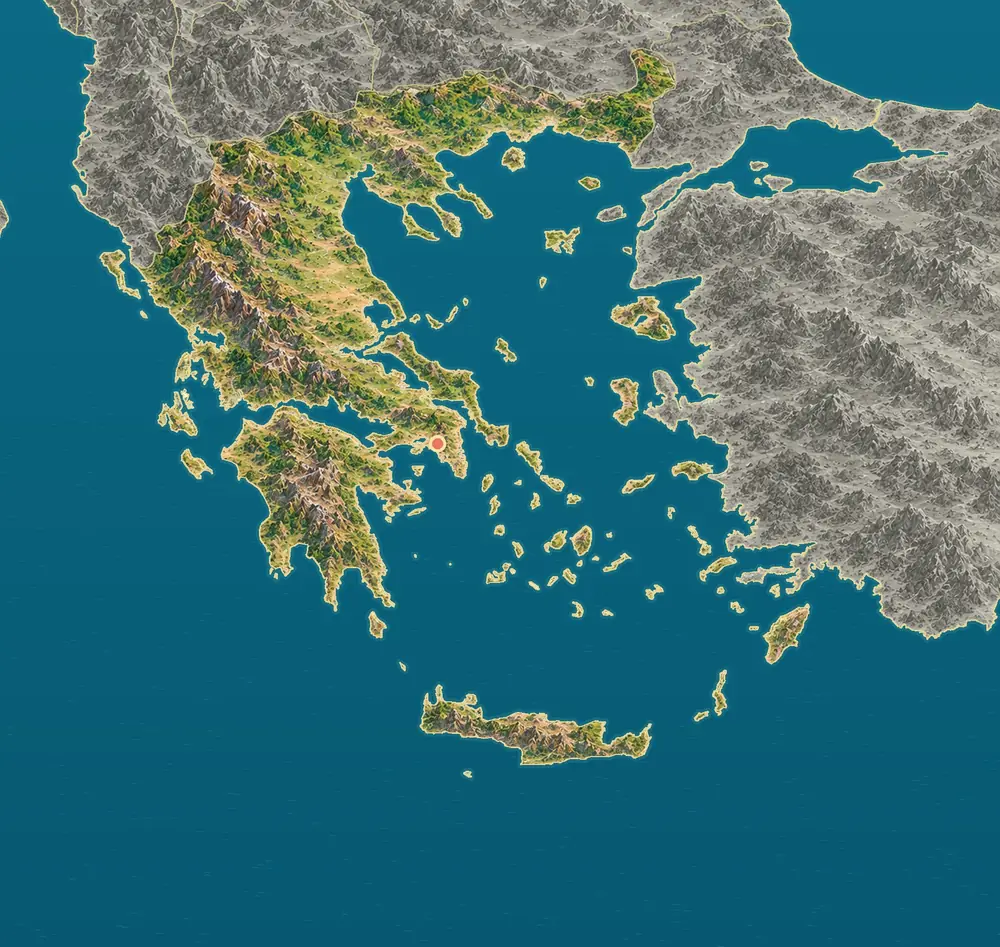
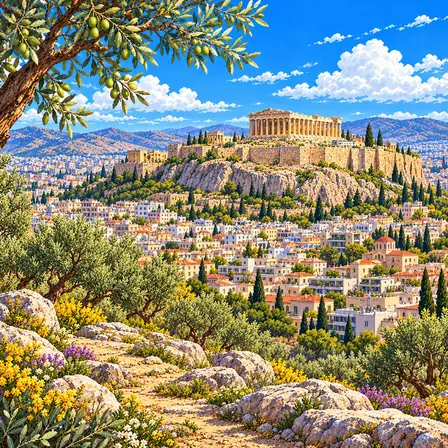
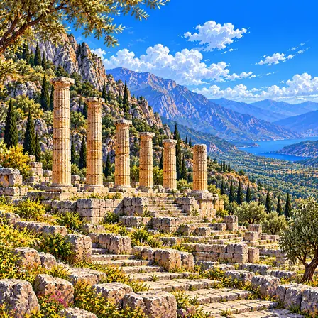
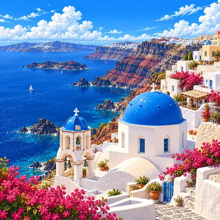
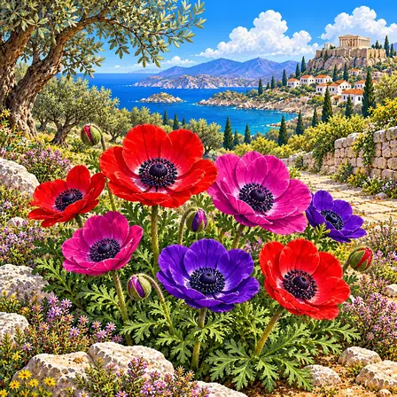
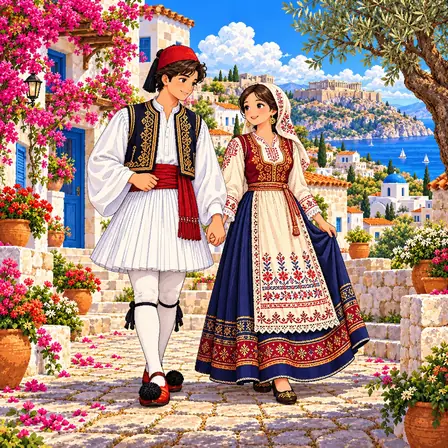
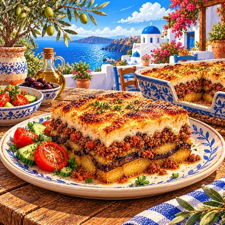
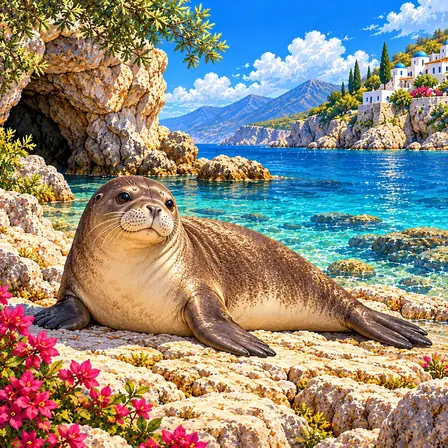
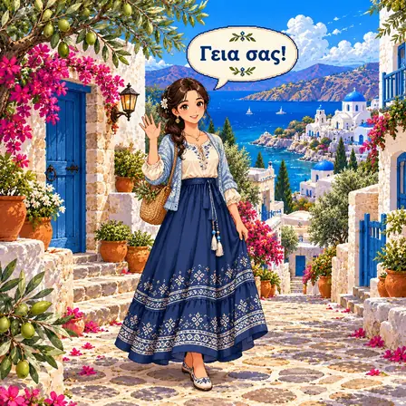

Olympus, the highest
Mount Olympus in the east of the mainland rises over 2,900 m, Greece's highest peak. In ancient Greek myths it was the home of the gods, and its limestone foothills reach close to the sea.
World Geography Atlas › Europe › Southern Europe

Ελλάδα
White houses with blue roofs · the birthplace of the Olympics.

Greece is made of a mountainous peninsula and many islands scattered across the sea. The biggest island is Crete in the south. Mount Olympus, said in myths to be the home of the gods, is the highest peak.
Mainland Greece is a peninsula crossed by north-south mountain ranges, ending in the Peloponnese in the south. Many islands lie in the Aegean Sea to the east and the Ionian Sea to the west.
Mount Olympus in the east of the mainland rises over 2,900 m, Greece's highest peak. In ancient Greek myths it was the home of the gods, and its limestone foothills reach close to the sea.
The Pindus range runs north to south along the western mainland. To its east lies the broad, flat Thessalian plain, with the rock pillars of Meteora rising at its edge.
Source: UNESCO, Meteora
Crete is the largest and most populous Greek island. Mount Psiloritis, 2,454 m high, rises in the middle of the island.
Santorini in the Aegean is a C-shaped volcanic island. About 3,600 years ago a great eruption emptied the magma below, the ground collapsed, and the sea flooded the huge hollow, called a caldera.
Source: NASA Earth Observatory, Santorini's Hidden Worlds · ESA, Earth from Space: Aegean islands
At Meteora, on the edge of the Thessalian plain, sandstone pillars rise more than 400 m above the plain. Sand and gravel laid down by rivers about 60 million years ago hardened, then cracked and wore away into pillars.
Source: UNESCO, Meteora
Santorini's caldera formed through repeated eruptions over hundreds of thousands of years. Ash from the eruption 3,600 years ago buried the ancient town of Akrotiri, preserving its houses, streets and wall paintings.
A city, a heritage site, nature, a plant, culture, food, an animal, a greeting and the flag of Greece, each drawn as pixel art.

Athens is the capital of Greece. It is a very old city, more than 3,000 years old. The ancient Parthenon temple stands on a hill above it.
Athens is the capital of Greece, a city with more than 3,400 years of history. In the 5th century BCE, during the age of Pericles, the Parthenon temple was built, and it is the birthplace of Western philosophy and democracy, where Socrates, Plato, and Aristotle were active. A Stone Age settlement is confirmed to have formed on the rocky Acropolis hill around 4,000 BCE. Today a modern city is layered over the ancient ruins.

Delphi was the place ancient Greeks believed was the "navel of the world." People came here to ask what the gods wanted. Temples and a theater still sit in layers on the mountainside.
Delphi was a holy place the ancient Greeks saw as the "navel of the world" (the omphalos). From the 8th century BCE it was famous for the oracle of the temple of Apollo (the Pythia), and people asked the oracle about important matters, from big decisions to founding new towns. A theater, a stadium, and temples were arranged in layers at the foot of Mount Parnassus. It is a UNESCO World Cultural Heritage site.

Santorini is an island shaped by a huge volcanic eruption. White houses with blue roofs line its cliffs. An ancient town buried in ash has also been found there.
Santorini is a volcanic island in the Aegean Sea. About 3,600 years ago, a giant eruption in the Minoan age made the center of the island collapse, forming a caldera - an unusual landform. The view of white houses and blue-domed roofs lined up on the cliffs is famous around the world. The ancient city of Akrotiri, buried by the eruption, is being dug up.

The anemone is a flower that colors spring fields. Its red, purple and white petals are bright. It even appears in Greek myths.
The anemone is a flower that colors the spring fields of Greece. It is famous in Greek myth for a story that it bloomed from the blood of Adonis, who was loved by Aphrodite, the goddess of beauty. Its red, purple, and white petals are bright, and in spring it blooms in groups across Greek hills and olive groves. It can be seen especially well on the island of Crete and the Peloponnese peninsula.

The fustanella is a white pleated skirt. The ones worn by ceremonial guards have 400 pleats. You can see it at national events and traditional dance shows.
The foustanella is a white pleated skirt seen in Greek traditional dress. It came from clothes worn by people in the old Greek mountains, and the more pleats it had, the more care it was thought to show. The foustanella of the Evzones, the honor guard in front of the Greek parliament, has as many as 400 pleats. Women's traditional dress is worn with a white pleated skirt together with an embroidered vest and a headscarf. It can still be seen at national-holiday parades and traditional dance shows.

Moussaka is eggplant, meat and a white sauce layered and baked. The sauce on top turns golden and tasty. Greek families love to eat it at home.
Moussaka is a Greek dish of roasted eggplant, minced meat, and creamy-smooth béchamel sauce stacked in layers and baked in the oven. Its present form comes from a recipe organized by the Greek cook Tselementes in the 1920s. It is usually stacked in three layers, and the top sauce bakes golden, savory like cheese. A little cinnamon is added to the meat for the special Greek scent. It is a favorite home dish that families gather to eat in summer, when fresh eggplants come in.

The Mediterranean monk seal lives in warm seas. Only about 700 are left in the world. About half of them live in Greek waters.
The Mediterranean monk seal is a rare seal that lives in the warm Mediterranean. Known for its smooth gray-brown body and round head, a grown one is more than 2 m long. It catches fish and octopus and rests in seaside caves, where it gives birth, away from people. Only about 800 to 1,000 are left in the whole world; thanks to protection, in 2023 the IUCN moved it one step down from Endangered to Vulnerable. About half of them live in Greek seas, so Greece has made sea national parks to protect them.

Yasas (Γεια σας) is a Greek greeting meaning "good health to you." Friends just say "yassou." The word "alphabet" comes from the Greek letters alpha and beta.
"Yia sas" is a Greek greeting, read "yah-sas," coming from words meaning "I wish you health." You use it with grown-ups or someone you meet for the first time, and with friends you say a short "yia su." Greek is one of the oldest languages in Europe, with records going back more than 3,000 years. The Greek script has 24 letters, and the word "alphabet" comes from its first two, alpha (α) and beta (β). Like pi (π) in math, its letters are widely used as science symbols too.

Greece's flag has nine blue and white stripes. In the top left corner is a white cross. Blue and white remind people of Greece's sea and sky.
Greece's flag is made of nine level stripes that take turns between blue and white. In the blue square at the upper left is a white cross, which stands for the Orthodox Church that most Greek people follow. Blue and white are colors that bring to mind Greece's sea and sky and its white waves. As for why there are nine stripes, it is said they stand for the nine syllables of a Greek motto. It was settled as the present flag in 1978.